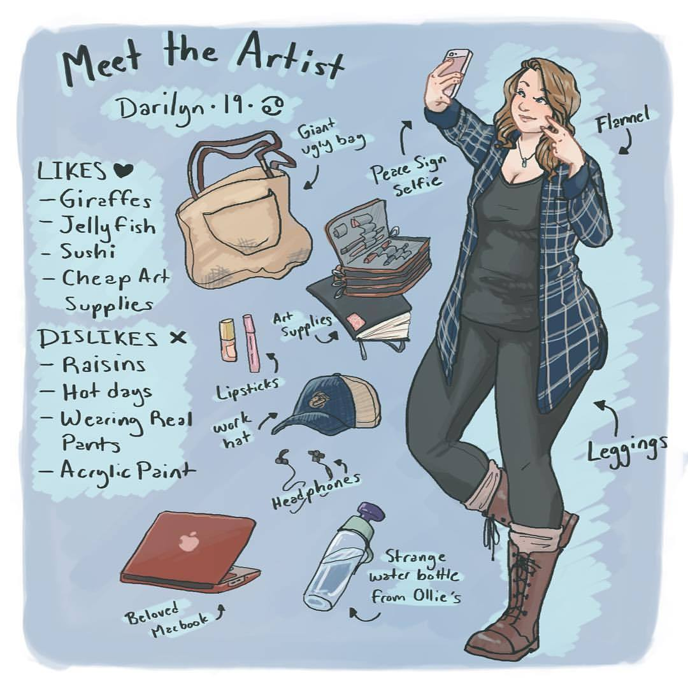

Hey! I'm Darilyn Mckeever, and I'm a 20 year old artist living and working in Charlotte, North Carolina.
I'm currently working on illustrations for children's book and building an illustration portfolio for future work opportunities.
Here, there is going to be a blurb about Darilyn's life, experience,
work, motivations, etc.